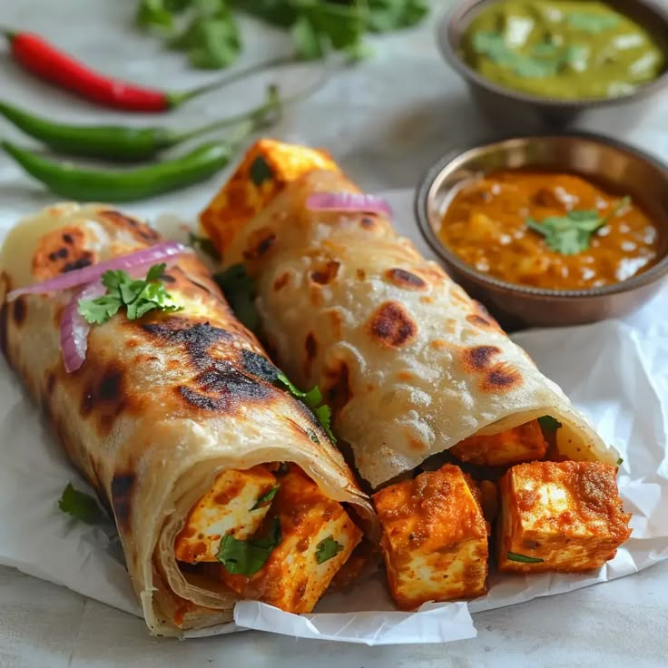

Paneer Kathi Roll Recipe
Paneer Kathi Roll is a popular Indian street food made with spiced paneer wrapped in a paratha or roti. Here's how to make it:
Ingredients:
For the Paneer Filling:
- 200 grams paneer (cottage cheese), cut into strips
- 1 medium onion, thinly sliced
- 1 small capsicum (bell pepper), thinly sliced
- 1 tomato, deseeded and sliced
- 1-2 green chilies, chopped (optional)
- 1 tsp ginger-garlic paste
- 1 tsp cumin seeds
- 1/2 tsp turmeric powder
- 1 tsp red chili powder
- 1/2 tsp garam masala
- 1/2 tsp cumin powder
- 1/2 tsp chaat masala
- Salt to taste
- 2 tbsp oil
- Fresh coriander leaves for garnish
For the Rolls:
- 4 medium-sized rotis or parathas (whole wheat or maida)
- 4 tbsp green chutney or mayonnaise (optional)
- 4 tbsp yogurt (optional)
- 1 small onion, thinly sliced (for garnish)
- Lemon wedges for serving
Instructions:
1. Prepare the Paneer Filling:
- Heat oil in a pan and add cumin seeds. Let them splutter.
- Add sliced onions and cook until they turn golden brown.
- Add ginger-garlic paste and sauté for a minute until the raw smell disappears.
- Add capsicum and cook for another 2-3 minutes, keeping them slightly crunchy.
- Add turmeric, red chili powder, cumin powder, garam masala, and salt. Cook the spices for a minute.
- Add tomato slices and stir well. Cook for 1-2 minutes.
- Now, add the paneer strips, gently mix them into the masala, and cook for 3-4 minutes, making sure the paneer absorbs the flavors.
- Add a sprinkle of chaat masala and fresh coriander leaves. Mix well and turn off the heat.
2. Assemble the Rolls:
- Warm the parathas or rotis on a tawa or pan.
- Spread a thin layer of green chutney, yogurt, or mayonnaise on each paratha.
- Place a portion of the paneer filling in the center of each paratha.
- Garnish with some sliced onions and sprinkle with a dash of lemon juice.
- Roll the paratha tightly, tucking in the sides to form a wrap.
3. Serve:
Serve the paneer kathi rolls hot with extra green chutney or tomato ketchup on the side. Enjoy your delicious homemade paneer kathi rolls!